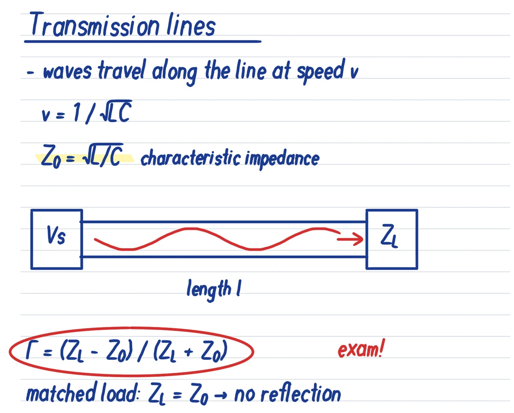

Write like on paper
Pressure-sensitive pens and highlighters, a whole-stroke or partial eraser, and press hard to erase. Pages sit side by side; pinch to zoom in on the details.
- Hold the pen still to snap a straight line, rectangle, circle or triangle
- Lasso to move, resize, turn or copy, then drag a shape's corners
- Lined, grid, dot or blank paper, per notebook or per page
